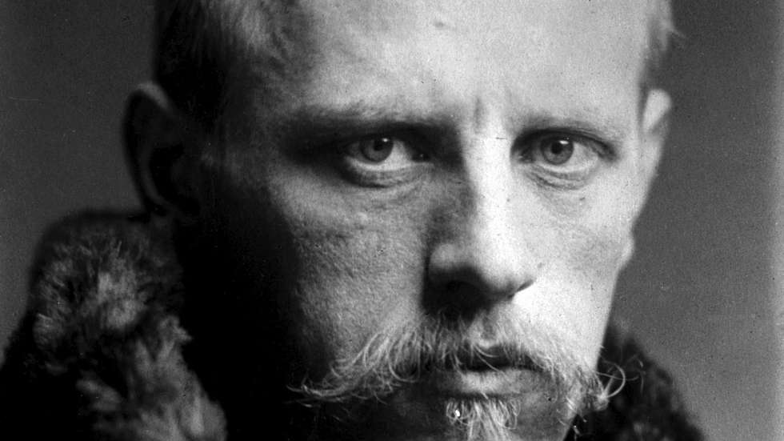

Fridtjof Nansen (1861–1930)
"No future, however, can be built on despair, distrust, hatred, and envy."
"No future, however, can be built on despair, distrust, hatred, and envy."
The most important thing in all research is not the results, the final conclusion, but the research itself, the struggle to achieve the results.
If nations […] could meet with confidence […], they would easily be able to establish a lasting peace.